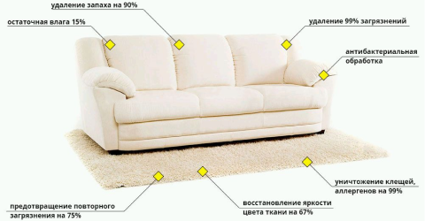
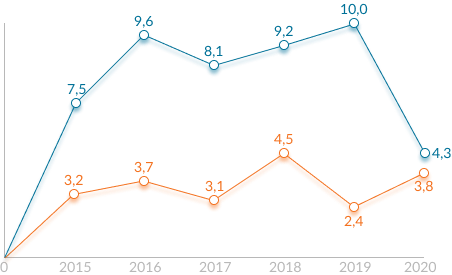

Химчистка мягкой мебели и старых диванов: советы и особенности
Все новостиСегодня мягкая мебель в домах является предметом, который моется реже всего, а некоторые хозяева и вовсе не задумываются о чистке кресел и диванов. Несмотря на заблуждения, основательная химчистка нужна не только для защиты дома от грязи, но и для профилактики заболеваний.
Когда стоит обратиться за химчисткой диванов к профессионалам

Мебель может не обладать заметными загрязнениями, однако это не значит, что на обивке нет невидимых глазу скоплений пыли, мельчайших частиц отмершей кожи и вредоносных бактерий и вирусов. Микроорганизмы живут и размножаются в обивках даже самых чистых домов: избавиться от вредителей можно только с помощью бытовой химии. Специалисты проведут полную химчистку мягкой мебели старых диванов с применением профессионального оборудования и химических средств для устранения паразитов.
Иногда на обивке остаются пятна, которые трудно вывести своими силами. Въедчивая грязь удаляется моющими средствами, которые не всегда оказываются под рукой. В случае если мебель становится тусклой или неприятно пахнет, при этом вы не хотите тратить деньги на покупку нового интерьера, следует обратиться за помощью к сотрудникам клининговых компаний.
Химическая чистка обойдётся дешевле покупки новой обстановки в комнате и придаст вещам обновлённый вид. При этом не придётся беспокоиться о том, чтобы везти диваны и кровати в место для чистки: сотрудники компании приедут на дом и вдохнут в старые вещи новую жизнь.
Сотрудники выезжают не только для чистки на дому: вы можете заказать уборку частного дома, офиса, торгового помещения вне зависимости от планировки и размеров. Эксперты по клинингу полностью удалят любые пятна, используя средства с безвредным для людей и животных составом. Компания предлагает услуги по широкому спектру тарифов без потери качества, актуальная стоимость уточняется на сайте.
Итак, почему именно Химчистка мягкой мебели?

Один из наиболее перспективных сегодня видов бизнеса – выездная чистка мягкой мебели, ковров и ковровых покрытий на дом. Химчистка обходится населению и организациям дешевле, чем покупка новой мебели, диванов или ковров. И в самые кризисные годы, когда весь рынок падал - рынок клининга снижался незначительно, а иногда даже рос! И сегодня рынок клинига растет.
Москва и Питер немного обгоняют регионы, и количество таких заказчиков будет расти с тем же темпом еще лет 5 точно! Ну а так же очень низкий уровень входа в бизнес. Можно купить экстрактор на авито, какую-то химию, сделать инстаграм себе и уже с этого стартануть. Как многие и делают.